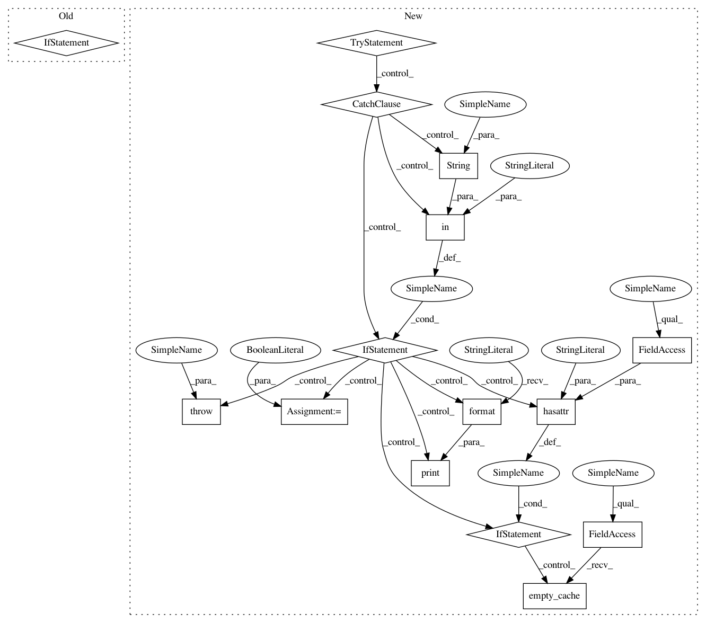

a233fceb859593143dbc29226f483f29253976ae,fairseq/multiprocessing_trainer.py,MultiprocessingTrainer,_async_forward,#MultiprocessingTrainer#Any#Any#Any#,182
Before Change
self.model.train()
self.optimizer.zero_grad()
if self._sample is None:
return 0, {}
// calculate loss and sample size
self.loss, sample_size, logging_output = self.criterion(self.model, self._sample)
return sample_size, logging_output
After Change
sample_size, logging_output, oom = 0, {}, False
if self._sample is not None:
try:
// calculate loss and sample size
self.loss, sample_size, logging_output = self.criterion(self.model, self._sample)
except RuntimeError as e:
if not eval and "out of memory" in str(e):
print("| WARNING: ran out of memory on GPU //{}, skipping batch".format(device_id))
oom = True
self.loss = None
if hasattr(torch.cuda, "empty_cache"):
torch.cuda.empty_cache()
else:
raise e
return sample_size, logging_output, oom
def _async_backward_and_opt(self, rank, device_id, grad_denom):
oom = False
In pattern: SUPERPATTERN
Frequency: 4
Non-data size: 15
Instances
Project Name: pytorch/fairseq
Commit Name: a233fceb859593143dbc29226f483f29253976ae
Time: 2017-12-06
Author: myleott@fb.com
File Name: fairseq/multiprocessing_trainer.py
Class Name: MultiprocessingTrainer
Method Name: _async_forward
Project Name: elbayadm/attn2d
Commit Name: a233fceb859593143dbc29226f483f29253976ae
Time: 2017-12-06
Author: myleott@fb.com
File Name: fairseq/multiprocessing_trainer.py
Class Name: MultiprocessingTrainer
Method Name: _async_forward
Project Name: elbayadm/attn2d
Commit Name: a233fceb859593143dbc29226f483f29253976ae
Time: 2017-12-06
Author: myleott@fb.com
File Name: fairseq/multiprocessing_trainer.py
Class Name: MultiprocessingTrainer
Method Name: _async_backward_and_opt